BRAND · CROWDFUNDING · DTC
从 0 到 1，建立品牌、发布众筹、搭建独立站。
ACACIA 是一套 3-in-1 户外产品。项目开始时，品牌还没有知名度，产品组合也需要解释。我参与产品与品牌设计，逐步完成视觉识别、产品说明、众筹内容和独立站设计。
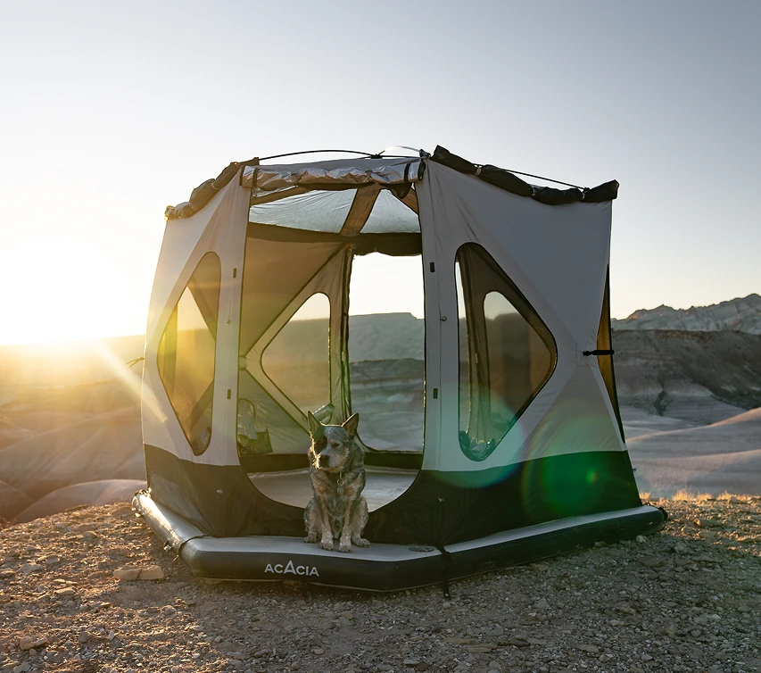
PROJECT SNAPSHOT
[BRAND → DTC]
我的工作
- MY ROLE
- 产品与品牌设计、视觉方向、UX/UI、内容设计及项目管理。
- TEAM
- 产品、市场、开发与内容团队。
- TOOLS USED
- FigmaShopifyAdobeIndiegogo
01 · BRAND FOUNDATION
先让用户看懂这套产品。
除了 Logo、色彩、字体、包装和摄影方向，我还梳理了产品说明书、玩法手册与 Media Kit。它们分别用于说明组件关系、展示使用方式，以及向媒体介绍产品。
同一套产品信息用于众筹、社媒和网站，避免不同渠道各讲一套。
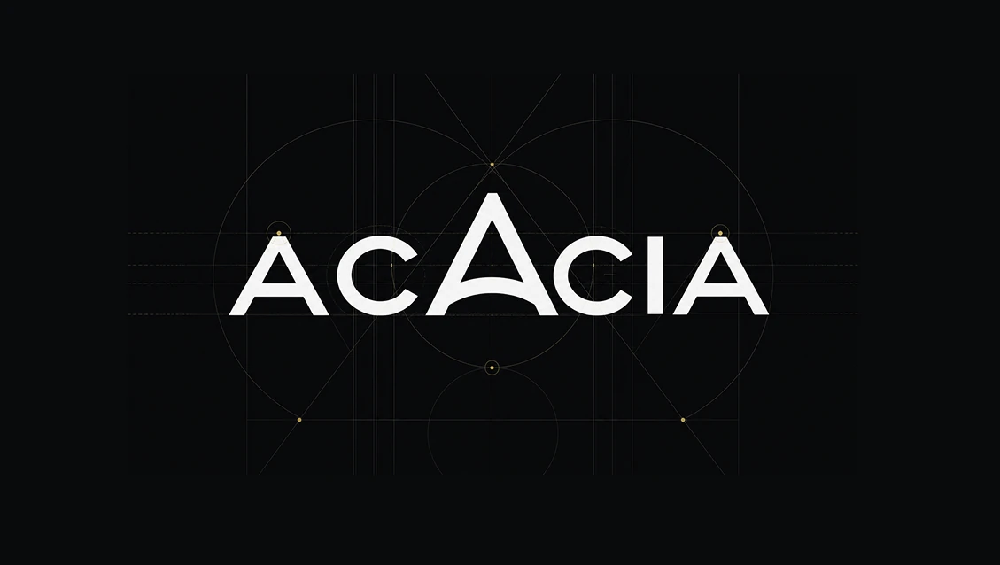
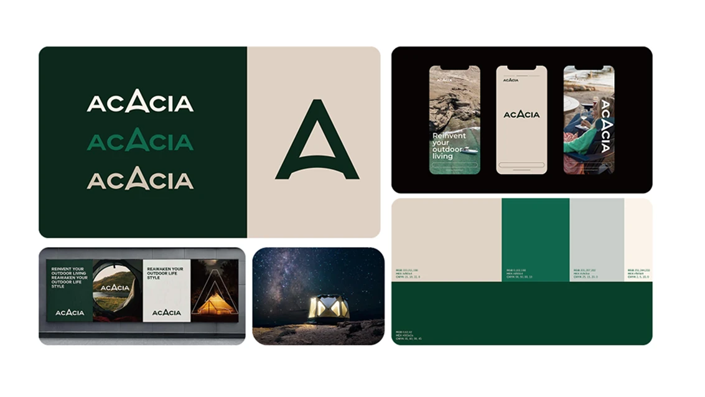
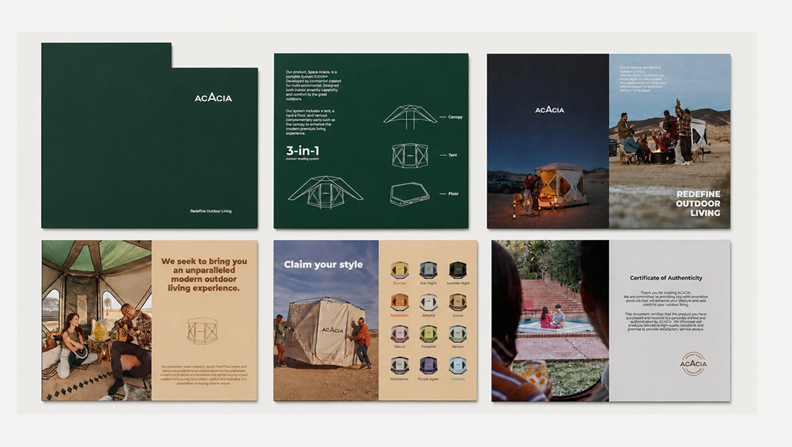
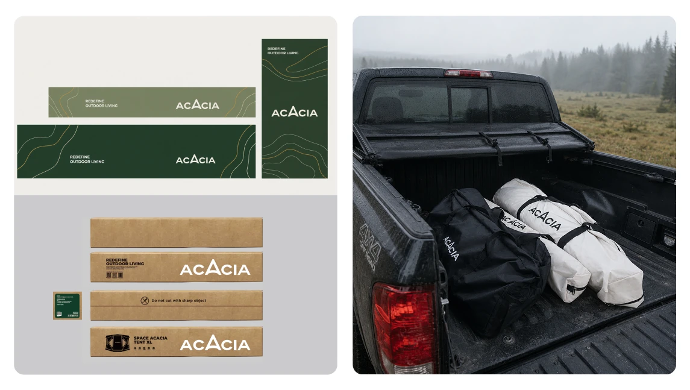
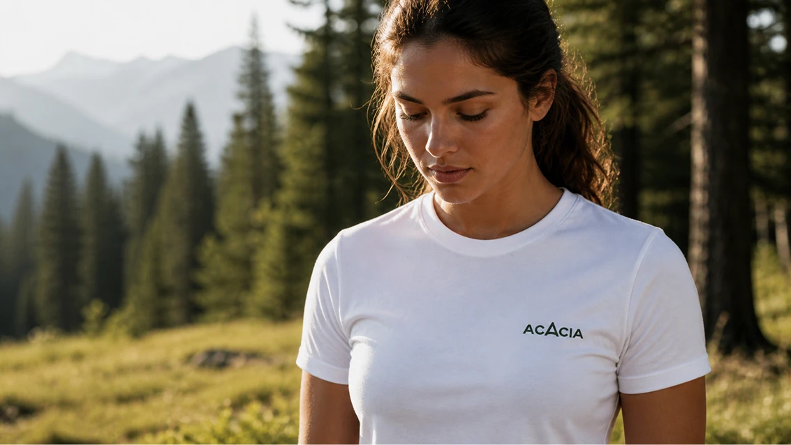
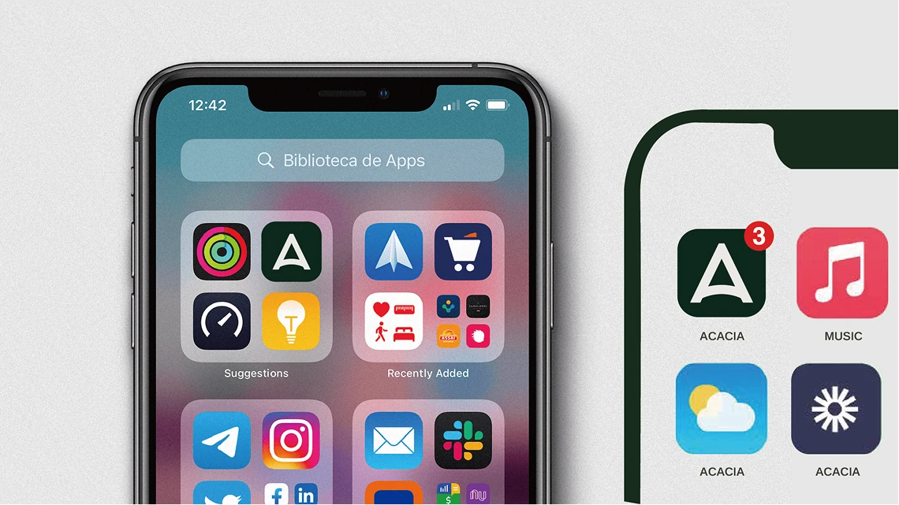
02 · CROWDFUNDING LAUNCH
把功能、使用场景和购买方案放到一起。
发布前，团队用 Media Kit 对接媒体，预寄产品给 KOL 制作体验视频，并通过社媒预热和广告扩大触达。我围绕这些渠道整理产品内容和视觉素材。
众筹页面依次说明产品能做什么、如何组合，以及不同回报方案包含哪些内容，再补充性能、测评和保障信息。
团队众筹结果
品牌从零起步，走到百万美元众筹。
我的贡献完成品牌视觉、产品说明与众筹内容设计，让同一套产品信息用于页面、媒体和社媒。
团队成绩众筹由产品、市场与内容等团队共同推进；下方保留 Indiegogo 页面记录。
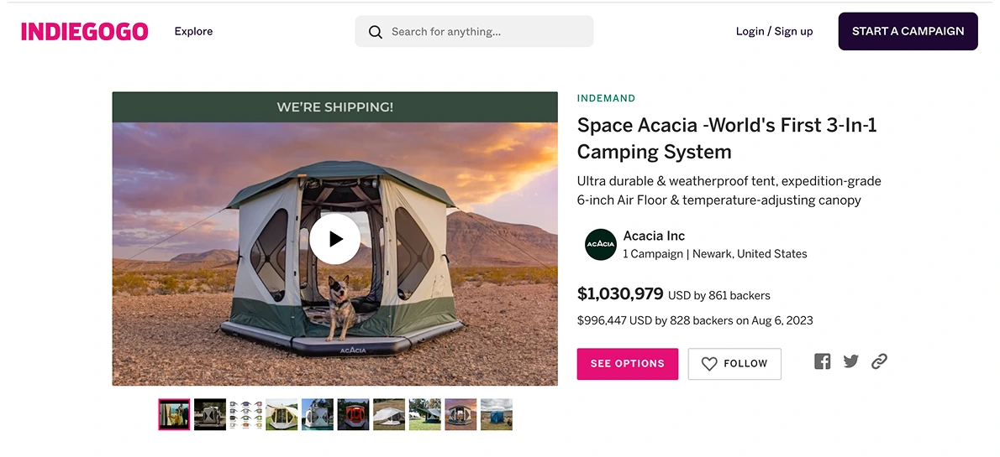
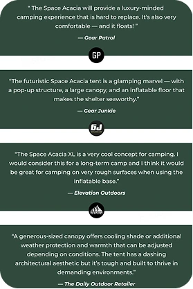
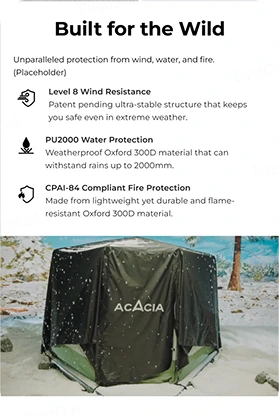
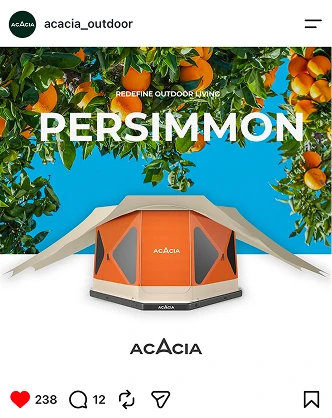
03 · DTC WEBSITE
众筹之后，继续完善产品浏览与购买。
我将发布阶段积累的内容整理为 16 个 DTC 页面。首页介绍品牌与产品组合，Collection 帮助用户缩小选择范围，PDP 说明规格、配件和购买选项。
网站继续使用场景图、测评和保障信息辅助选择；团队也在 Facebook 社群中维护已有用户。
AUTO SCROLL
REAL HTML · SCROLL INSIDE
可在框内滚动查看完整页面；手动操作时暂停自动浏览。
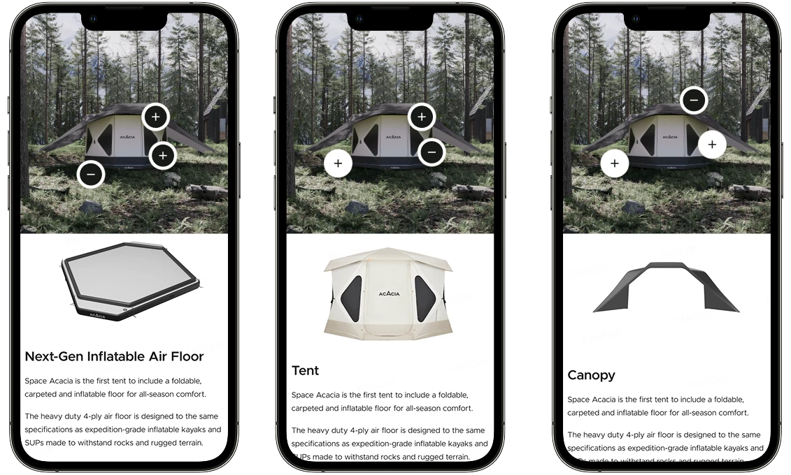